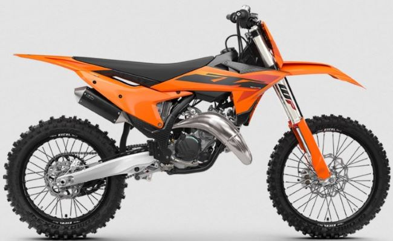

MIGLIOR PRODOTTO IN COMMERCIO

La KTM 125 SX 2025 si ispira direttamente al team Factory Racing e ne sfrutta al meglio le competenze.
È imbattibile, proprio come il rombo che emette. Le componenti del motore sono state completamente aggiornate,
presenta una nuova mappatura e con lo scarico racing eroga 2.5 cavalli in più rispetto all'anno precedente.
Inoltre l'iniezione elettronica di serie perfetta permette di avere una potenza ottimale a qualunque tipo di altezza.
E' inutile dire che questa moto regna in tutti i settori, dai campi da cross alle strade....
SCHEDA TECNICA
Nome: ktm SX 2025
Cilindrata: 124,8cc
Motore: 2 tempi
Cambio: 6 marce
Utilizzo: Cross
Capacità serbatoio: 7.2 l
Cavalli: 36 cv
Emissioni: euro 5
Peso: 87 kg
Prezzo: 10200 euro